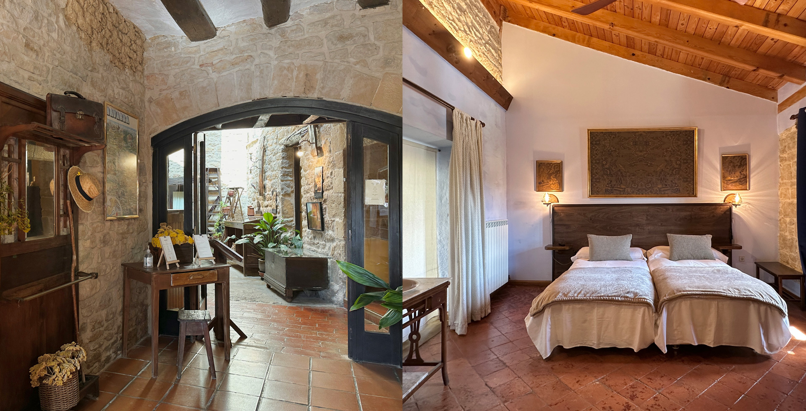
Palacio de Orisoain
Un palacio medieval Cabo de Armería restaurado artesanalmente en el valle de Valdorba, entre Pamplona y Olite. Siete estancias singulares donde la piedra, la madera y el silencio cuentan siglos de historia.
La rehabilitación artesanal respetando los espacios originales ha permitido recrear singulares rincones y diferentes estancias, todas ellas con su propio encanto. Un refugio de piedra y silencio en el corazón de Navarra.
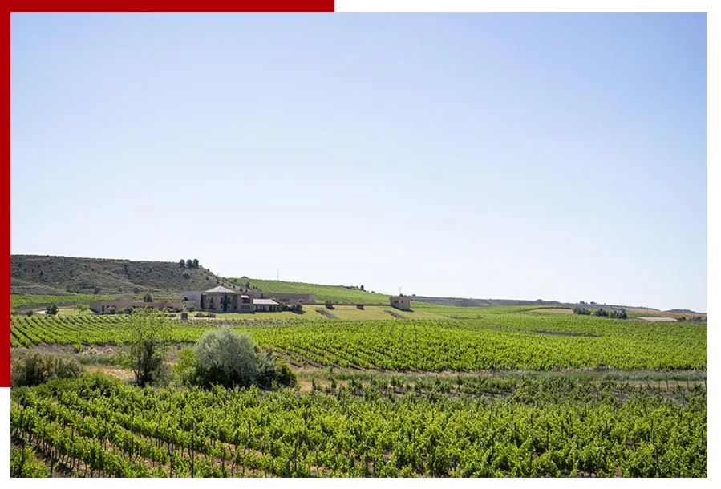
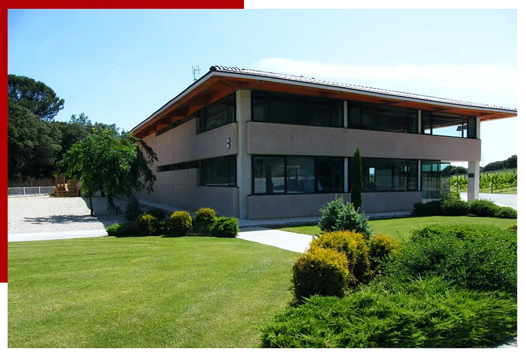
Estancias singulares en el palacio
Tipos de desayuno con producto local
Al Palacio Real de Olite
A Pamplona
Donde la piedra cuenta
Tres habitaciones Doble Superior y cuatro Suite Loft, cada una con su carácter propio, techos abuhardillados y vigas originales de madera.
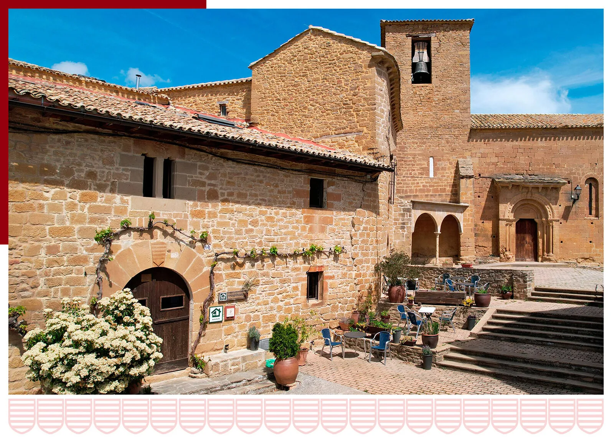
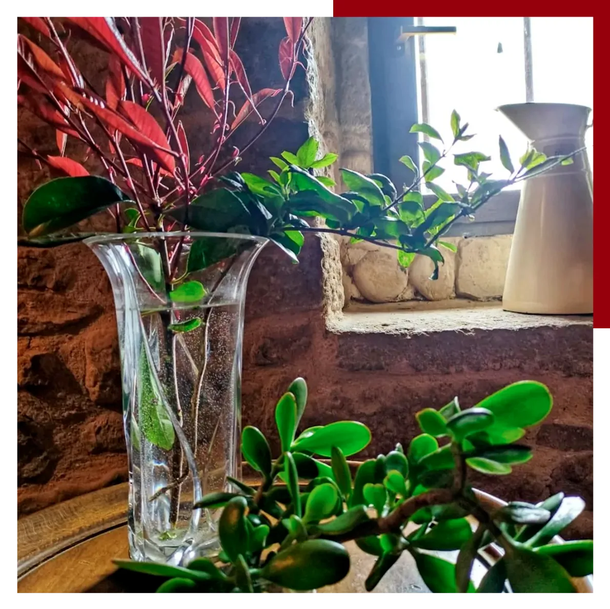
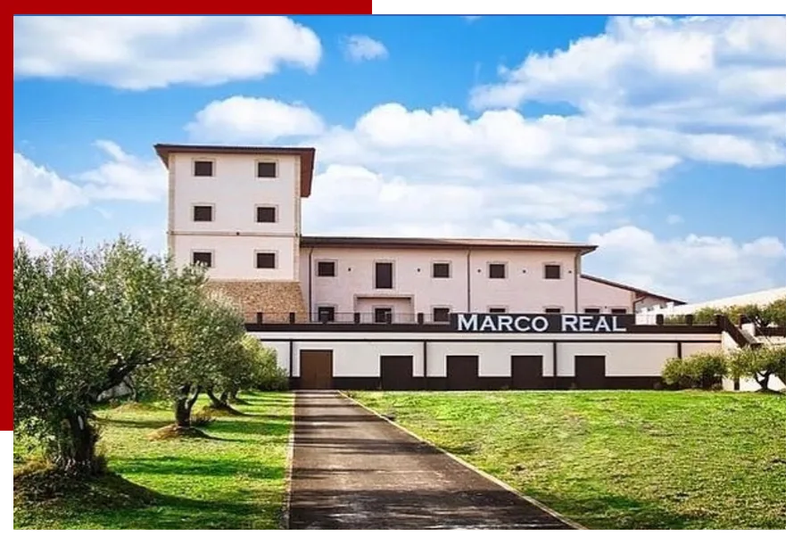


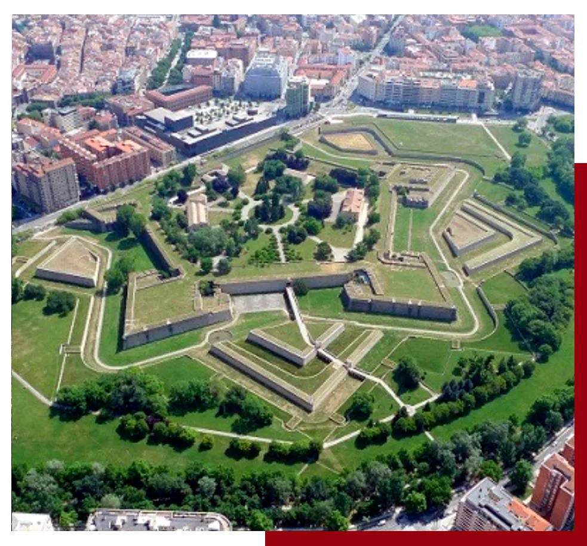
Un palacio que lleva siglos esperando tu visita
Cómo funciona
Desde la reserva hasta la despedida, cada detalle está pensado para que solo te preocupes de disfrutar.
Reserva
Contacta por teléfono, WhatsApp o a través del sistema de reserva online. Te confirmamos disponibilidad y te asesoramos sobre la estancia que mejor se adapta a tus planes.
Llegada
Te recibimos en el palacio, te enseñamos los rincones con historia y te acomodamos en tu habitación. Si lo deseas, concertamos una cena con producto local de temporada.
Descubre
Cada mañana, desayuno con producto navarro. Desde aquí explorarás Olite, la Zona Media, las bodegas de la D.O. Navarra, el Nacedero del Urederra y mucho más.
Preguntas frecuentes
¿Dónde se encuentra el Palacio de Orisoain?
En Calle Mayor 3, Orísoain (Navarra), en el valle de Valdorba, entre Pamplona (29 km) y Olite (21 km). Una ubicación perfecta para recorrer la Zona Media de Navarra.
¿Qué tipos de habitaciones tiene?
Dispone de 3 habitaciones Doble Superior (15-18 m²) con techos abuhardillados y vigas de madera, y 4 Suite Loft (35-40 m²) con salón integrado, ideales para dos o tres personas.
¿Se admiten mascotas?
Sí, las Suite Loft admiten mascotas bajo consulta previa de condiciones. Las Doble Superior no admiten mascotas.
¿Hay edad mínima para los huéspedes?
Sí, la edad mínima de los huéspedes es de 12 años.
¿Qué incluye el desayuno?
Se sirve a partir de las 9:00 con tres opciones: Dulce (tostadas, fruta, cereales, repostería casera, yogur, zumo natural), Serrano (jamón con pan tostado, zumo y fruta) y Campero (tortilla de huevo fresco con pan tostado con tomate y fruta).
¿Qué se puede visitar en los alrededores?
El Palacio Real de Olite (21 km), Pamplona (29 km), Santa María de Eunate (22 km), el Cerco de Artajona (25 km), bodegas como Ochoa o Nekeas, y espacios naturales como el Nacedero del Urederra o las Bardenas Reales.
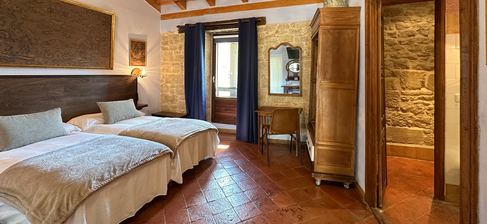
Doble Superior
Habitaciones exteriores de altos techos abuhardillados con vigas de madera. La rehabilitación artesanal ha permitido recrear singulares rincones donde cada estancia tiene su propio encanto.
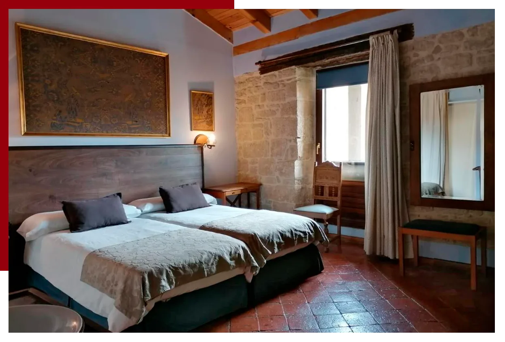
Todo lo que necesitas
Cada Doble Superior combina el carácter de un palacio medieval con las comodidades actuales. Vistas exteriores al entorno rural de Valdorba.
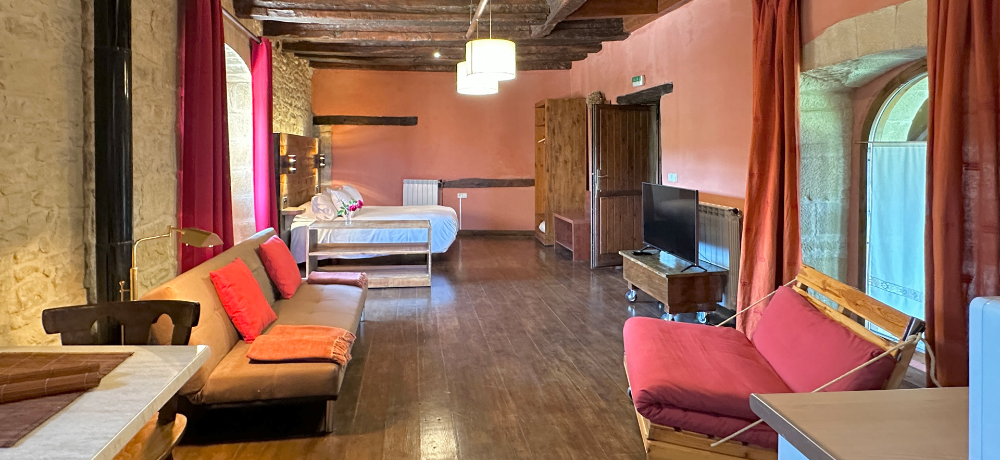
Suite Loft
Estudios amplios con salón integrado, ideales para dos y tres personas. Admiten mascotas bajo consulta previa de condiciones.
Espacio y carácter
Las Suite Loft duplican el espacio de las Doble Superior e incorporan una zona de estar donde desconectar tras un día recorriendo Navarra. Cada suite conserva la personalidad de los espacios originales del palacio.
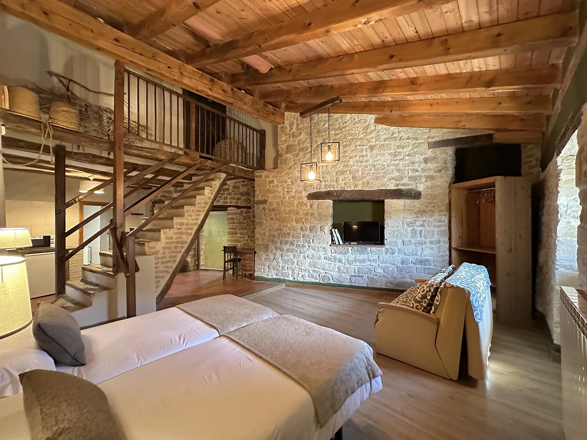
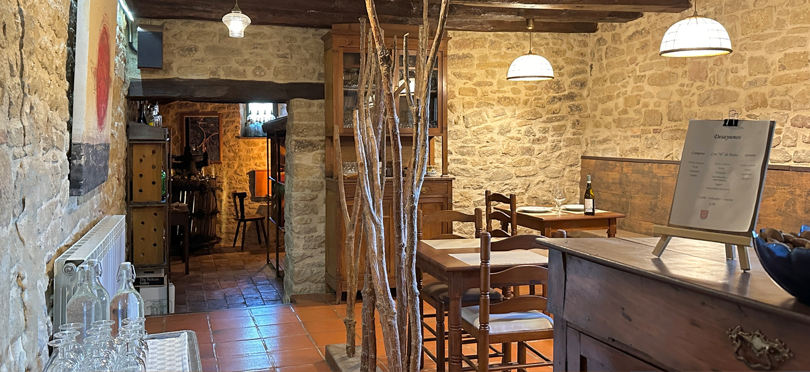
Nuestros servicios
Desayunos con producto navarro, cenas con ingredientes de temporada y una atención personal que convierte tu estancia en algo memorable.
Desayunos
Tres opciones para empezar el día con la energía del producto local:
- Dulce: tostadas de pan con aceite o mantequilla y mermelada, fruta, cereales, repostería casera, yogur y zumo natural.
- Serrano: jamón con pan tostado, zumo natural y fruta.
- Campero: tortilla de huevo fresco con pan tostado con tomate y fruta.
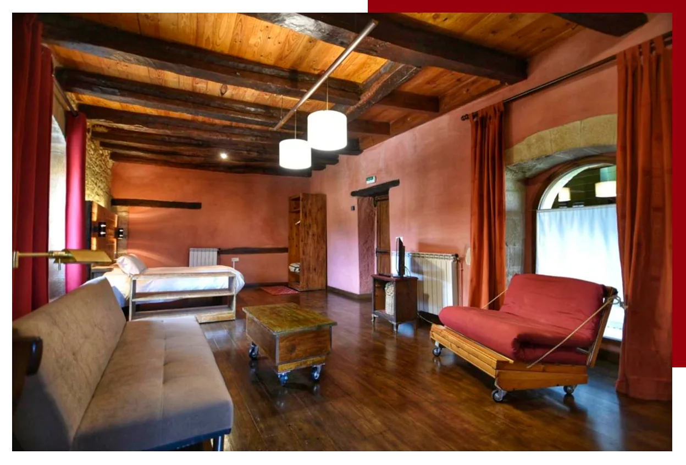
Cenas
Cocina ligera donde el producto local es el protagonista. Según la temporada: espárragos, alcachofas, pimientos, setas y otros ingredientes de la tierra navarra.
Se preparan bajo reserva previa y se sirven en comedores privados para los huéspedes del palacio.
Servicios generales
Entorno y actividades
El Palacio de Orisoain es el punto de partida perfecto para recorrer la Zona Media de Navarra: patrimonio monumental, naturaleza, gastronomía y enoturismo.
Monumentos y pueblos
Desde el Palacio Real de Olite hasta las murallas del Cerco de Artajona, la historia de Navarra rodea el palacio.
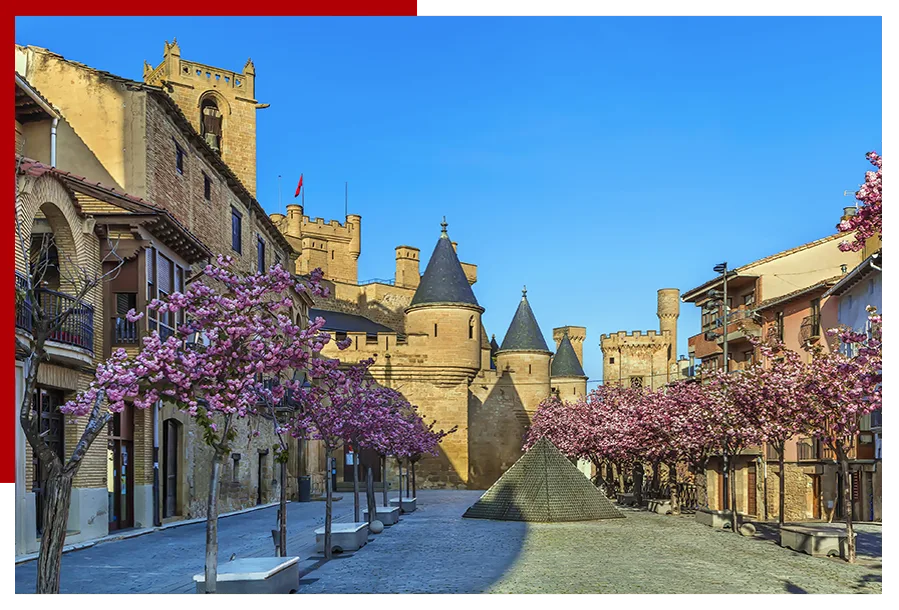
Palacio Real de Olite
Uno de los palacios más imponentes de España y entre los más bellos de Europa. Fortaleza del siglo XIII con sucesivas ampliaciones hasta el siglo XX.
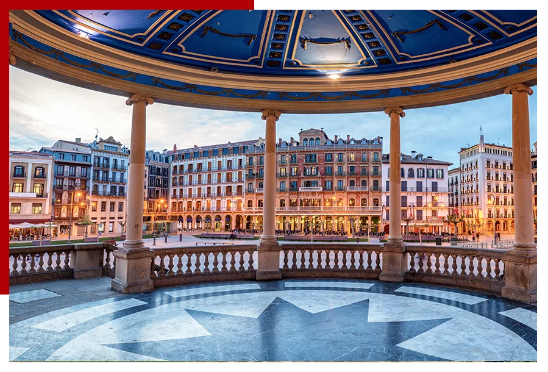
Pamplona
Capital de Navarra. Su Casco Viejo es el principal atractivo turístico: catedral, murallas, ciudadela y una oferta gastronómica de primer nivel.
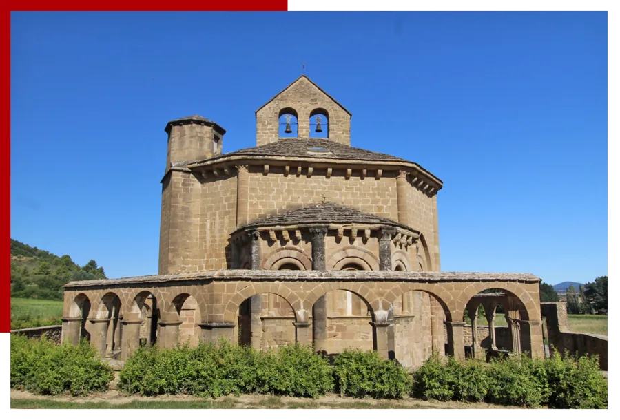
Santa María de Eunate
Arte, religiosidad, historia y magia concentrados en su iglesia octogonal y claustro, en pleno Camino de Santiago.
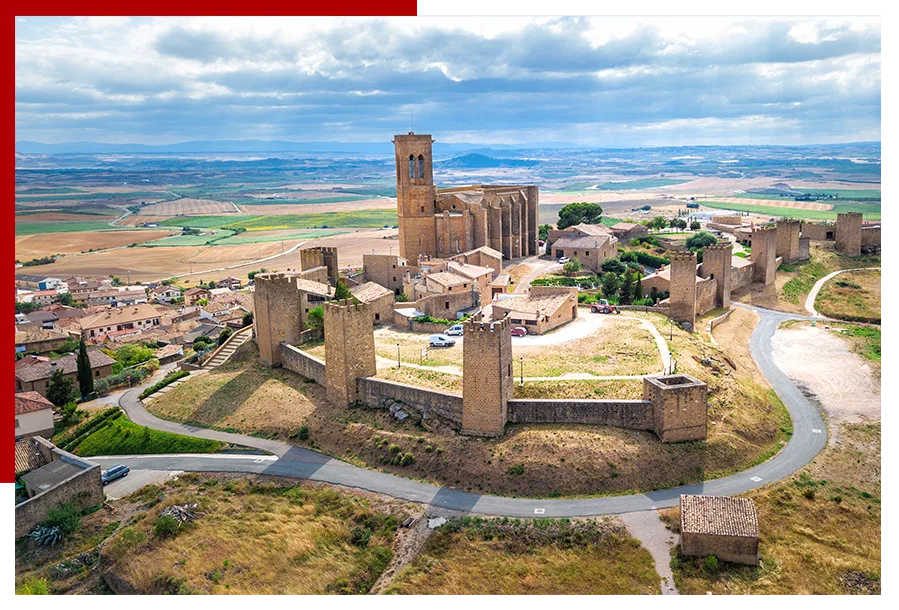
El Cerco de Artajona
Una de las fortificaciones más importantes de la Navarra medieval, del siglo XI, con su iglesia-fortaleza del XIII.
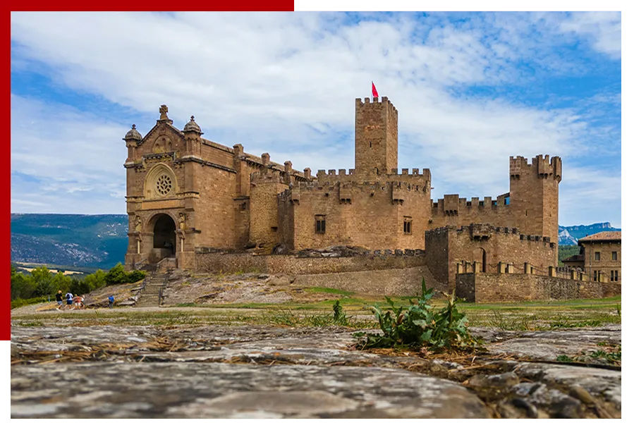
Castillo de Javier
Antigua torre de vigilancia entre los reinos de Navarra y Aragón. Hoy acoge exposiciones sobre el patrón de Navarra con arte, maquetas y objetos históricos.
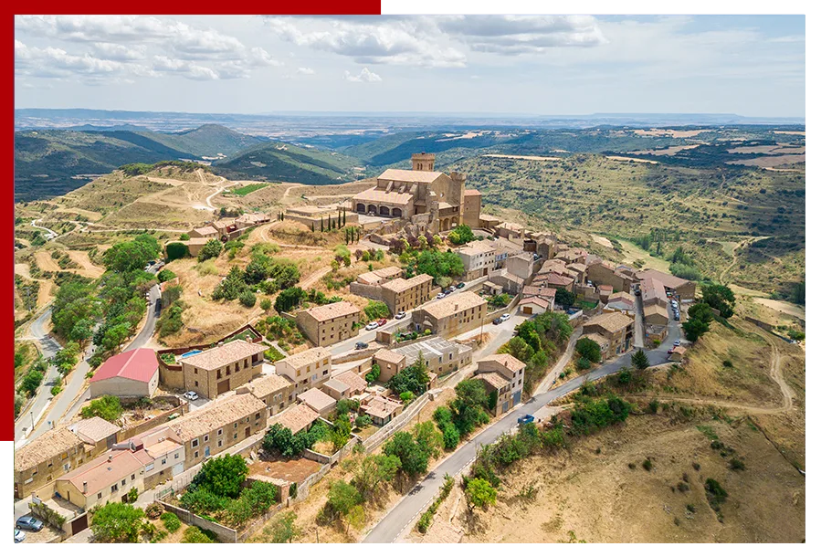
Ujué
Encantador pueblo medieval del centro-este de Navarra, con su imponente iglesia-fortaleza gótica dominando la Ribera navarra.
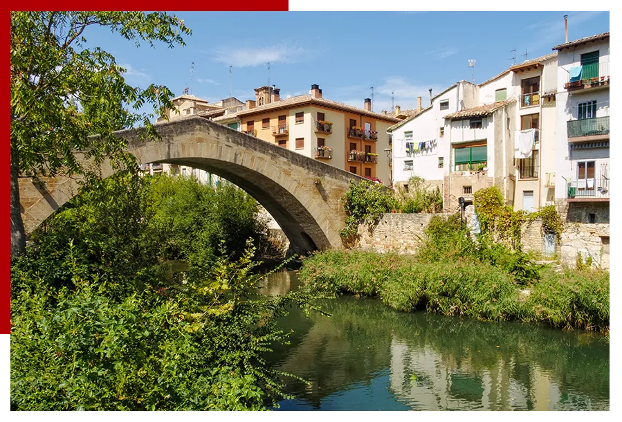
Estella
Ciudad monumental en el Camino de Santiago, con destacada arquitectura civil románica e iglesias de gran valor artístico.
Paisajes inolvidables
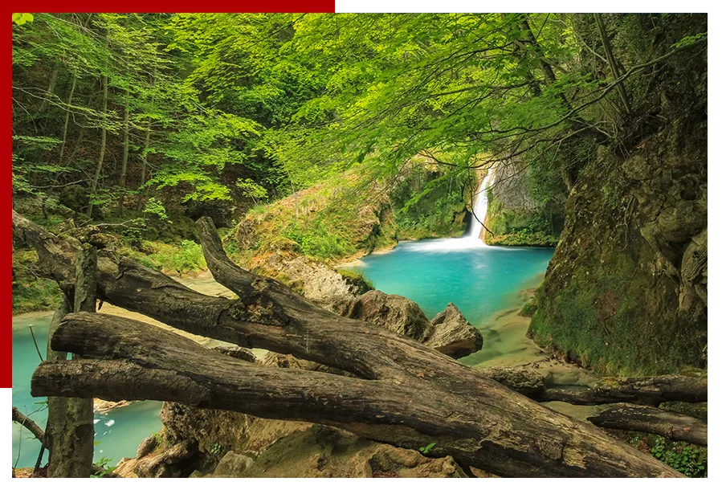
Nacedero del Urederra
Manantial imprescindible al pie de la Sierra de Urbasa. El acceso está regulado y es necesario reservar con antelación en nacederourederra.com.
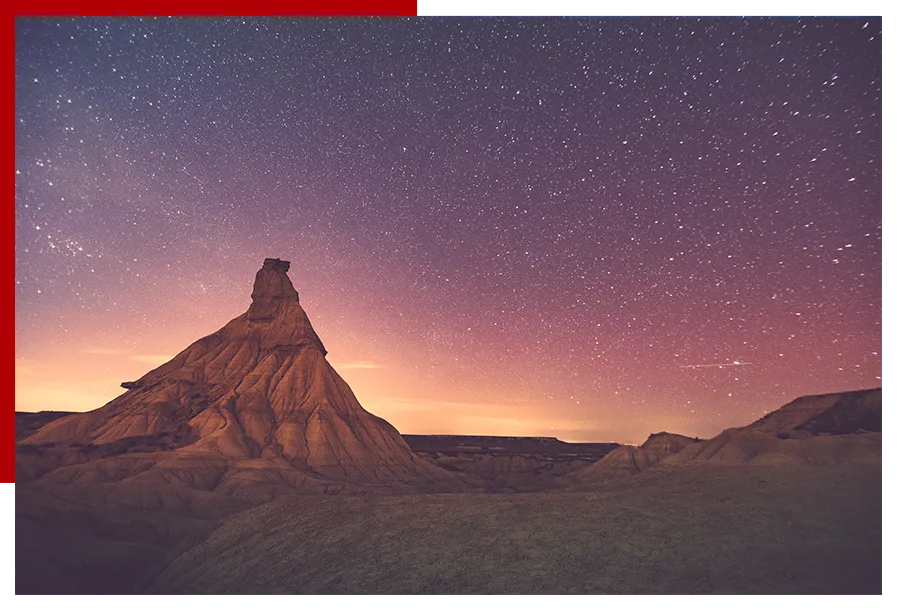
Bardenas Reales
El desierto del norte de España. Rutas panorámicas como el Cabezo de Castildetierra. Excursiones en bici y 4x4 disponibles.
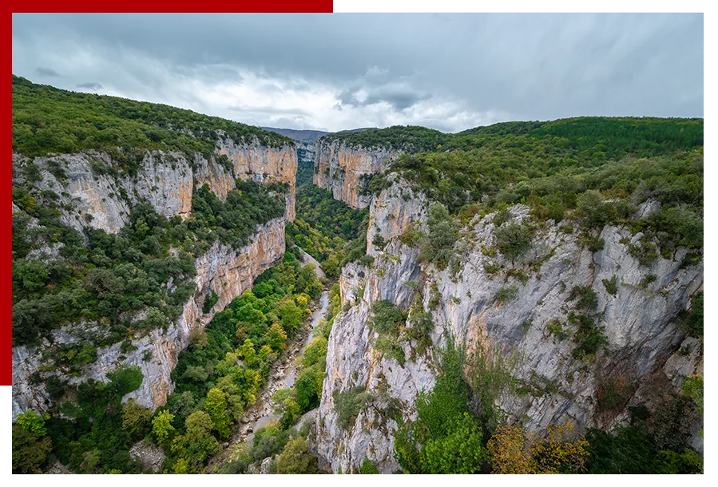
Foz de Lumbier y Arbayún
Gargantas profundas de paredes verticales. La ruta de Lumbier es apta para todas las edades; Arbayún ofrece una experiencia más agreste.
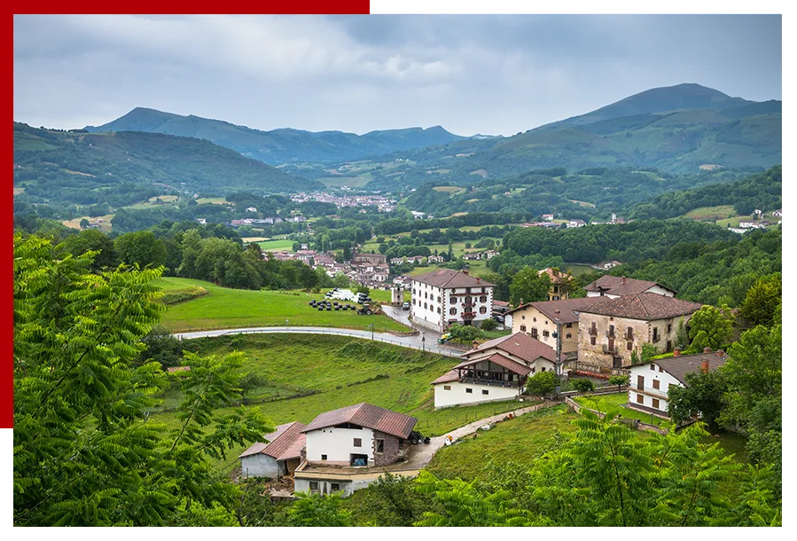
Valle del Baztán
Urdax, Zugarramurdi, la zona del Bidasoa. Rutas alternativas con paisajes espectaculares de la Navarra verde.
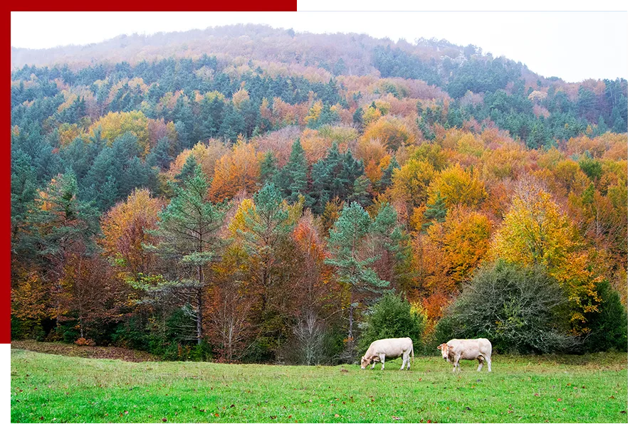
Selva de Irati
Uno de los mayores bosques de hayas y abetos de Europa, con un grado de conservación excepcional y el pintoresco pantano de Irabia.
Bodegas cercanas
La D.O. Navarra rodea el palacio. Estas son algunas de las bodegas que puedes visitar desde aquí.
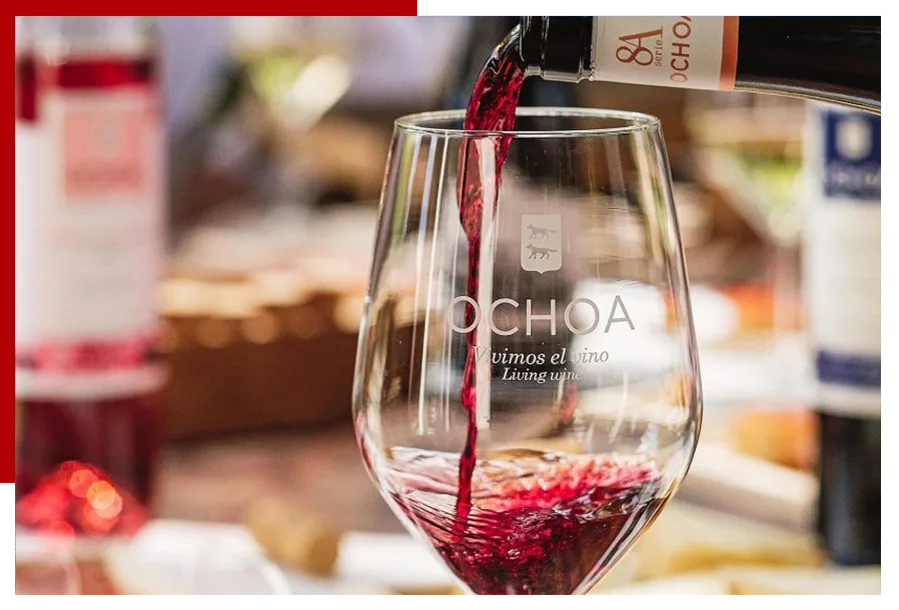
Bodegas Ochoa
Seis generaciones de tradición vinícola familiar. Tel. 948 740 006.
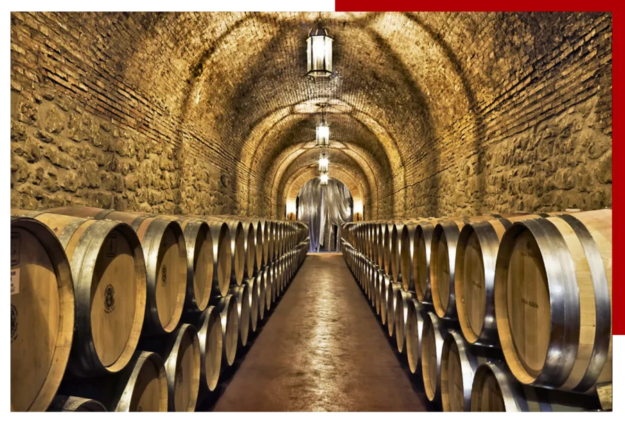
Bodegas Nekeas
Antigua cooperativa de Añorbe reconvertida en productora de vinos y aceite de calidad, exportados a todo el mundo. Tel. 948 350 296.
Vive la historia de Navarra
Reserva directamente a través de nuestro sistema online o contacta con nosotros por teléfono o WhatsApp para consultar disponibilidad y condiciones.
Reserva online WhatsApp Llamar 646 270 535Cómo llegar
En el corazón de la Zona Media de Navarra, entre Pamplona y Olite, a solo unos minutos de la autovía.
Página no encontrada
La página que buscas no existe. Vuelve al inicio para seguir explorando el palacio.
Volver al inicio